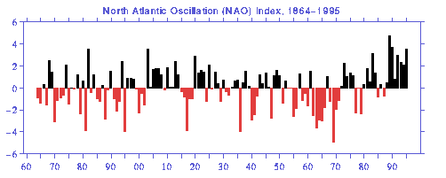

Proposed CMIP sub-project:
NAO variability (NAOMIP)
D. Stephenson, P. Doblas-Reyes, R. Bojariu, J. Hurrell, T. Delworth(*),
V. Pavan, F. Molteni
(*)=potential collaborator
The North Atlantic Oscillation (NAO) is a coherent vacillation in
surface temperature and sea-level pressure showing substantial variability
over periods up to centuries (Van Loon and Rogers, 1978). It plays a major
role in controlling European climate and the North Atlantic ocean, and
may play a role in modulating the North Atlantic ecosystems. Hence, it
is of great interest to assess how well current coupled models can simulate
the variability in the NAO. For more information on the NAO, consult the
CLIVAR documentation
. NAOMIP is a multi-national proposition for a CMIP sub-project to
compare the coupled ocean-atmosphere model simulations of the annual, interannual,
and interdecadal variability in the North Atlantic Oscillation.
North Atlantic Oscillation (NAO) SLP Index

Lisbon minus Stykkisholmur Normalized December-March
Average SLP Anomalies.
Values ascribed to the year of the January. This index was provided by
Jim Hurrell (jhurrell@ra.cgd.ucar.EDU),
and was employed in Hurrell (1995: Decadal trends in the North Atlantic
Oscillation: regional temperatures and precipitation. Science, 269,
676-679). High index corresponds to strengthened westerlies with warmer
than average conditions in western Europe and colder than average conditions
in Greenland.
NAO Questions ?
-
Do coupled models reproduce the spectrum of NAO temporal variability ?
-
Are the major spatial patterns in surface temperature well-reproduced ?
-
Do realistic SLP-SST modes exist in some of the coupled model results ?
Plan of Action
The 80 years of monthly mean surface temperature
data from CMIP1 for each model will be recuperated over the extended North
Atlantic region (80W-30E,EQU-80N) and the spatio-temporal variability will
be compared to that in the COADS observations. To shed light on the above
questions, the following analyses will be made:
-
Preliminary CMIP1 results (Covey et al., 1996) indicate
that the July-January difference in zonal mean surface temperature at 50N
ranges widely between 17-30C for the different models (obs=23C). Advanced
time series methods such as X-11 (Stephenson and Macias, 1997) will be
used to examine the annual cycle in surface temperature and extract it
efficiently.
-
A simple NAO index time series will be made for each
model by area weighting the surface temperature anomalies over the Icelandic
and Norwegian regions. The spectra of these time series will be compared
to that of a similar NAO index made from the observations (Van Loon and
Rogers, 1978).
-
An EOF analysis of the deseasonalised temperatures
will be performed in order to extract a) the Principal Components, and
b) the spatial patterns. The leading spatial pattern will be intercompared
and the leading principal component will be compared with the simpler NAO
index made using the area weighting.
-
There exists a possibility of obtaining time series
of the SLP from certain groups and in these cases, the SLP will be cross-correlated
with the surface temperatures using canonical correlation analysis, both
for periods less than 5 years and for periods longer than 5 years, in order
to verify the models' abilities to simulate the coupled scenarios presented
in Bjerknes (1964).
-
[ More detailed plans on decadal variability to be
added ? ]
The results of the intercomparison will be made freely
available to all modelling groups via the World Wide Web and an article
will be written summarising the major findings. Any other contributions
from researchers interested in modelling aspects of the NAO would be openly
welcomed as part of the sub-project.
Relevant publications
Bjerknes, J., 1964: Atlantic air-sea interaction.
Advances in Geophysiscs. Academic Press, 1-82.
Hurrell, J. W., 1995: Decadal trends in the North
Atlantic Oscillation: Regional temperatures and precipitation. Science,
269, 676-679.
Hurrell, J. W., 1996: Influence of variations
in extratropical wintertime teleconnections on Northern Hemisphere temperatures.
Geophys. Res. Lett., 23, 665-668.
Hurrell, J. W., and H. van Loon, 1996: Decadal
variations in climate associated with the North Atlantic oscillation. Clim.
Change, in press.
D.B. Stephenson, and J. Macias, (1997) Seasonality
and regularity of the El Nino-Southern Oscillation from 1950-96, Submitted
to Nature.
F. Valero, Doblas, F. J. and J. F. Gonzalez, 1996:
On Long-Term Evolution of the Seasonal Precipitation in Soutwestern Europe
Annales Geophysicae, 14, 976-985, 1996
Van Loon, H., and J.C. Rogers, 1978: The seesaw
in winter temperatures between Greenlandand northern Europe. Part I: General
Description. Mon.Wea.Rev., 106, 296-310.
Rogers, J. C., and H. van Loon, 1979: The seesaw
in winter temperatures between Greenland and northern Europe. Part II:
Some oceanic and atmospheric effects in middle and high latitudes. Mon.
Wea. Rev., 107, 509-519.
Bojariu R., 1992: Air Temperature over Europe
associated to certain oscillating type atmospheric phenomena, Meteorology
and Hydrology, vol. 22, 2, 29- 31
Bojariu, R., C. Pop, 1993: North Atlantic Oscillation
Effects on European Precipitation Variability, Proceedings of the International
Symposium on Precipitation and Evaporation, Bratislava, vol. 1, 195- 197.
Bojariu, R.,1996: Climate Variability Patterns
in the Upwelling Regions of North-western African Coast Derived with Multivariate
Statistical Methods, Technical Note No.I.96.03, Institute for Remote Sensing
Applications, Joint Reserch Centre, Ispra, Italia.
Bojariu, R., R. Cotariu,1996: Seasonal effects
of Atlantic air-sea interaction on climate fluctuations over southern and
central Europe, Romanian Journal of Meteorology, vol 3, 1, 1-7.
Bojariu, R., 1997: Climate variability modes due
to ocean-atmosphere interaction in the central Atlantic, Tellus, in press.
Covey, C., B. D. Santer and E. Cohen-Solal, 1996:
CMIP: A study of climate models and natural climate variability, Proceedings
of the Workshop on Dynamics and Statistics of Secular Climate Variations,
Miramare-Trieste, Italy, 4-8 December 1995, J. L. Kinter III and E. K.
Schneider, eds., Report No. 26, Center for Ocean- Land-Atmosphere Studies,
pp. 11-15.
For more details, please contact
David B. Stephenson
Meteo-France CNRM,
42 av. Coriolis,
31057 Toulouse Cedex
Tel. : +(33)-5-61-07-96-98,
Fax. : +(33)-5-61-07-96-10,
e-mail : stephen@meteo.fr